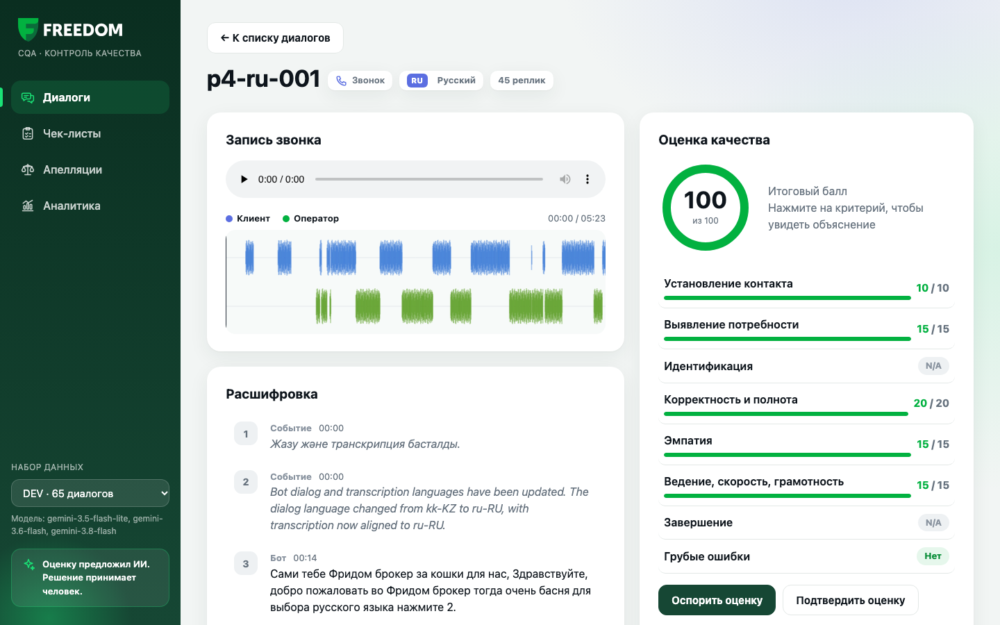

Хакатон Freedom Broker · CQA
ИИ проверяет качество разговоров операторов
Система оценки чатов и звонков по чек-листу.
ИИ предлагает оценку и показывает доказательства, человек принимает решение.
Команда EskaSeska
1
Система оценки чатов и звонков по чек-листу.
ИИ предлагает оценку и показывает доказательства, человек принимает решение.
Команда EskaSeska
Каждый день операторы ведут сотни чатов и звонков на трёх языках. Проверить качество нужно по чек-листу из 8 критериев.
Чаты и звонки на русском, казахском и английском, с ботом и голосовым меню в начале.
Человек успевает прослушать только малую часть разговоров. Остальные остаются без проверки.
Грубость или раскрытие данных без проверки личности можно пропустить.
Мы сделали программу и сайт. Программа сама скачивает диалоги, ИИ оценивает их по чек-листу, а проверяющий смотрит результат и принимает решение.
Все 8 критериев, балл от 0 до 100 и отдельный флаг грубой ошибки.
По каждому критерию короткое объяснение и номера реплик-доказательств.
Оценку можно оспорить. Финальное слово за проверяющим, оценка ИИ сохраняется рядом.
Программа сама берёт диалоги из API организаторов (DEV и PROD).
Нумерует все реплики с 1: клиент, оператор, бот, события.
Gemini получает чек-лист и транскрипт и отвечает строго в формате JSON.
Код проверяет ответ ИИ. Если что-то не так, спрашивает ещё раз.
Код считает балл и сохраняет results.json и данные для сайта.
Главная идея: ИИ только оценивает критерии и объясняет. Итоговый балл считает обычный код по точной формуле, поэтому он всегда честный и одинаковый.
| Установление контакта | 10 | |
| Выявление потребности | 15 | |
| Идентификация | 20 | |
| Корректность и полнота | 20 | |
| Эмпатия | 15 | |
| Ведение, скорость, грамотность | 15 | |
| Завершение | 5 | |
| Грубые ошибки | отдельный флаг | — |
Скрипт оценки, проверка ответа, формула балла, тесты и небольшой сервер для сайта. Без сложных фреймворков.
ИИ, который оценивает диалоги, через бесплатный API. Можно заменить на Claude Opus 5.5 одной строкой в настройках.
Сайт для проверяющего без библиотек. Работает без интернета, графики нарисованы вручную.
API организаторов: диалоги DEV и PROD, записи звонков
GitHub: код и файлы результатов для жюри
ИИ-помощник Claude помогал писать и объяснять код
60 чатов и 5 звонков с настоящими записями
RU · 35KZ · 15EN · 15Модели: gemini-3.6-flash, gemini-3.8-flash, gemini-3.5-flash-lite

Проверяются все диалоги, а не выборка.
Грубые ошибки видны сразу, с цитатой.
Каждая оценка — готовый разбор для обучения.
Видно, что чинить: инструкцию, сервис или продукт.
Сравнить оценки с экспертами и подстроить инструкцию для ИИ · анализ тона голоса в звонках · вход для сотрудников · локальная модель, чтобы данные клиентов не уходили наружу